Archives Actus Tuamotu
|
Pour consulter une archive, cliquez sur un lieu ci-dessous |
| 2009 Avant le départ |
| 2009 Caraïbes |
| 2009 Panama-Galapagos |
| 2009 Gambier |
| 2010 Marquises |
| ... |
| 2010 Tahiti |
| 2010 Cook-Niue |
| 2010 Tonga - Fidji |
| 2011 Nouvelle Zélande |
| 2012 Australie |
| 2012 Polynésie |
| 2013 Hawaii |
| 2013 Canada |
| 2013 USA |
| 2014 Costa Rica |
| 2015 Costa Rica |
| 2016 Costa Rica |
| ...ou revenez aux actualités |
16 Mai 2010 - Tikehau, Kite Surf
Depuis quelques jours, le vent s'est levé sur Tikehau. Outre l'abondance d'électricité éolienne, le vent nous apporte également les kite surfeurs, plus communément appelés cervolantistes.
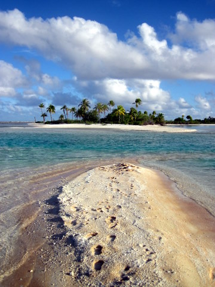
Le théâtre des opérations: assez sympathique.
En effet, deux catamarans que nous avions déjà croisés auparavant (notamment en Martinique!) sont arrivés. A leur bord, de grands sportifs sortent leur cerf volant et leur planche dès que le vent dépasse 20 noeuds et ils se lancent alors dans des figures de style impressionnantes. Pour ceux qui l'ignorent, le kite surf consiste à défiler sur les flots, debout sur une planche fixée aux pieds et fermement attaché à un cerf volant géant, en forme d'aile de parapente.
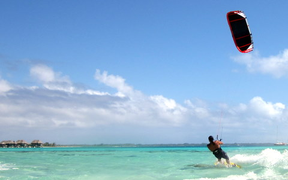
Roland surfe, porté par son cerf volant.
Intrigués par ces exploits, nous avons voulu en savoir plus. Ted et Roland nous ont proposé de nous montrer les rudiments à l'aide d'un cerf volant d'entraînement que l'on apprend à manipuler sur la plage.
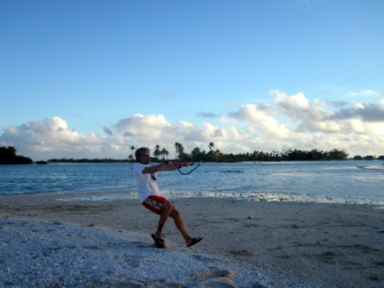
Eric tente de maîtriser le kite.
Il faut d'emblée préciser que ce cerf volant de taille ridicule comparée à celle des cerf volant utilisés sur la mer, est quand même assez difficile à maîtriser, même avec les pieds par terre. La puissance de l'engin est telle qu'une petite inattention peut vous faire décoller du sol et littéralement voler sur quelques mètres. Inutile de dire que sans contrôler parfaitement le cerf volant, il est illusoire d'imaginer poser ses pieds sur une planche et fendre les flots, même si ceux si ne rugissent que faiblement au sein des atolls.
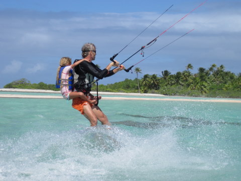
Syr Daria sur le dos de Ted: grandiose.
Quant aux enfants, ils ont pu grimper sur le dos de Ted qui les a emmenés dans une folle course, effectuant même quelques sauts. Même s'il a fallu insister pour qu'ils se laissent tenter tant était grande leur appréhension (sauf Sidney, qui, lui, avait peur), les trois enfants se sont succédés sur le dos de Ted, émerveillés par la puissance du cerf volant. Même Cécile a eu droit à sa petite ballade surfante. Quant à moi, j'ai du me contenter de prendre des photos car Ted, ce gringalet, n'est même pas capable de surfer avec un mec de 90 kilos sur le dos !
14 Mai 2010 - Tikehau, Course de Va'a
Ce vendredi 14 mai avait lieu la célèbre course Rangiroa-Tikehau en Va'a. C'est l'occasion pour les petits et les grands de se retrouver sur la plage près du petit port pour manger un petit morceau de poulet grillé en écoutant un groupe de musiciens locaux.
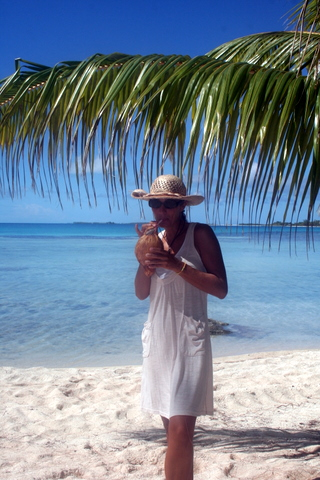
Cécile, très à l'aise sur la plage.
Mais qu'est-ce qu'un va'a me demanderez-vous ? Et je vous répondrai: le Va'a est une étroite pirogue munie d'un balancier, prévue pour accueillir de 1 à 6 personnes. C'est un sport très populaire en Polynésie et, dans chaque archipel que nous avons visité, nous avons vu des jeunes (et moins jeunes) gens s'entraîner.
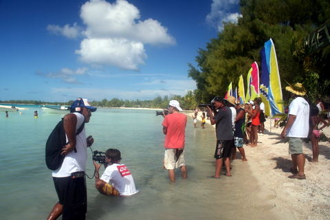
Le comité d'accueil est prêt.
A l'heure actuelle, il existe des compétitions dans tous le Pacifique et même, depuis peu, en Europe. La course d'aujourd'hui se disputait en va'a à 6 équipiers sur 80km dont 60 en plein océan, entre deux atolls. A l'arrivée, il y avait les caméras car le va'a est un sport très médiatique en Polynésie, les badeaux car il y en a toujours et, bien sûr, les vahinés pour remettre les colliers de fleurs aux vainqueurs.
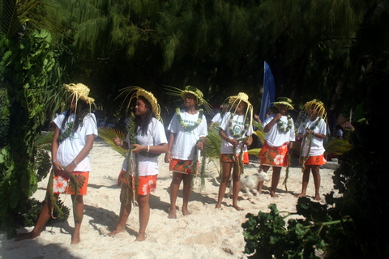
Une vahiné par rameur.
Partis à 7h30, les premiers arrivèrent vers 13h30, soit 6 heures d'efforts pour parcourir les 80 km. A titre de comparaison, nous avions effectué exactement le même trajet deux jours plus tôt, en voilier, et il nous avait fallu 10 heures. Autant dire que ces rameurs sont dopés au jus de coco, seule explication possible à une telle performance.
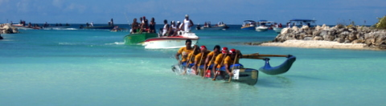
Le va'a des vainqueurs arrive. Tous des freluquets.
Il y a une explication plus raisonnable pour expliquer cet exploit: d'une part, chaque équipe est composée de 9 rameurs, qui se relaient par groupe de 3 tous les 1/4 d'heure. Chaque équipier rame donc pendant 30 minutes puis se repose pendant 15 minutes, et ainsi de suite. Le changement d'équipier se fait en pleine mer: chaque va'a a son bateau suiveur. D'autre part, les 3 premières équipes, toutes originaires de Tahiti, sont composées de professionnels surentraînés. Les vainqueurs ont d'ailleurs empoché 13.000€ à se partager.
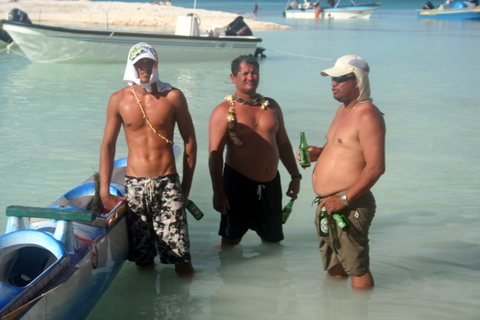
Evolution du rameur en direct: à 20 ans, à 30 ans et à 40 ans.
Quant aux autres équipes, composées d'amateurs des îles, elles ont quand même réussi à faire la traversée en des temps raisonnables (Le 8ème n'avait qu'une heure de retard sur les premiers).
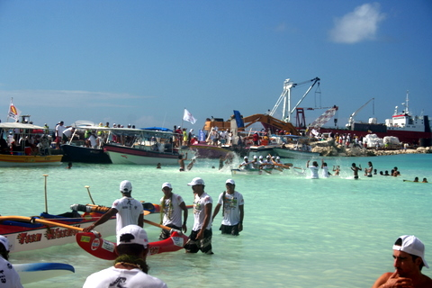
Arrivée des va'a locaux: on les accueille avec des grandes gerbes d'eau.
Enfin, après la pesée réglementaire, les vainqueurs ont reçu leur coupe et tous le monde a regagné ses pénates, y compris les va'a que l'on a chargés sur un cargo qui retournait à Tahiti. Prochain rendez-vous: les championnats du monde à Nouméa, en fin de semaine.
13 Mai 2010 - Que faire ?
Voilà un sujet intéressant, déjà évoqué en 1903 par Vladimir Ilitch Oulianov, plus connu sous le nom de Lénine. Je souhaite ici apporter un élément de réponse personnel, même si mon approche s'avère un rien plus pragmatique que celle de Wladimir. En effet, que faire ? Rester au mouillage devant le village de Tikehau où aller dans le secteur, où il n'y a rien, ce qui constitue précisément la raison d'y aller.

Voilà notre destination. Sympa, non ?.
Après mûre réflexion, nous avons décidé de changer de mouillage. Cependant, changer de mouillage dans un atoll n'est pas toujours trivial. En effet, la foison de patates (de corail) ne constitue pas seulement un danger pour la navigation mais pose également un problème de mouillage. Il n'est pas rare de coincer sa chaîne ou son ancre sous une de ces patates, ce qui, en général, requiert la mise à l'eau du capitaine, de ses palmes, son masque et son tuba. Muni de son troisième poumon, le capitaine plonge et essaie de libérer la chaîne, ce qui reste dans le domaine du réalisable jusqu'à une profondeur qui dépend de l'aptitude du capitaine à retenir sa respiration. Pour ma part, doté d'une constitution hors du commun, je tiens plus de 8 minutes en apnée mais uniquement en statique. Autant dire qu'à plus de 10m de profondeur, la position de la chaîne devient un mystère insondable, comme la psychologie féminine ou l'antimatière.
Au large de Tikehau-village, notre ancre gisait par 14m de fond. Nous étions donc dans l'expectative lorsque nous entamâmes la remontée fantastique de la chaîne. Les enfants s'étaient regroupés sur le trampoline, non pas tant pour prier que pour apercevoir l'ancre au bout de la chaîne, signe indubitable de départ imminent. Dès que Cécile eut actionné le bouton up du guindeau, la chaine se mit en branle et chacun retint sa respiration. Après de longues minutes de cliquetis, entrecoupées de longues secondes de répit, les enfants virent enfin poindre la masse sombre de l'ancre, et, hurlant de joie à l'unisson, ils me donnèrent tous ensemble le signal du départ. J'enclenchai alors la marche avant et, d'un air détaché, comme il sied à un capitaine au long cours qui en a vu d'autres, je scrutai l'horizon en disant "Recht door", car je maîtrise parfaitement la langue de Vondel, surtout pour ce qui est de la voile.
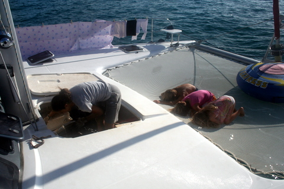
Contrairement aux apparences, les enfants ne prient pas.
Après 3600 secondes de navigation au moteur en laissant les bouées rouges à notre gauche, nous sommes arrivés dans le secteur, au sud-est du lagon, presque face à l'hotel 5 étoiles qui s'est autoritairement accaparé la plus belle plage de l'atoll. Pour les punir de leur outrecuidance, nous aurions pu mouiller en face de ladite plage et gêner de la sorte la vue de leur clientèle bourgeoise, mais j'ai préféré témoigner mon indifférence en jetant l'ancre à une encablure, en face de la barrière de corail qui, une fois encore, nous protégeait de la houle du large.
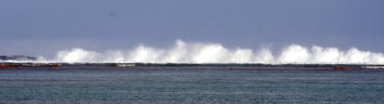
La houle se fracasse sur le corail.
Je ne me rappelle pas l'avoir déjà dit alors je vous le divulgue: la mer qui s'écrase sur le corail à 200m de notre bateau produit un tumulte permanent qui n'est pas sans rappeler les grondements de tonnerre d'antan.
12 Mai 2010 - En daar is de werk.
Chaque trimestre (environ) c'est la même chose: nous tombons à court de matière pour l'école des enfants. En général, on anticipe et lorsque nous n'avons plus que 2 mois de cours, nous demandons à nos amis de nous envoyer les cours qu'ils ont accumulés en Belgique.
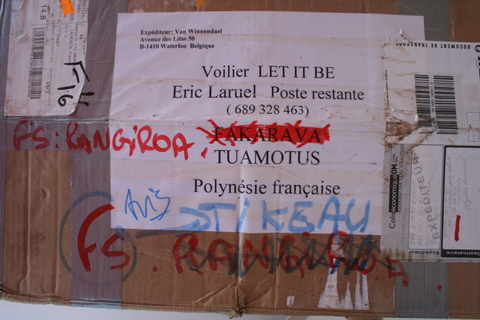
A voir l'étiquette, on comprend bien des choses.
Le problème consiste à savoir où nous serons près de 8 semaines à l'avance. C'est relativement difficile, surtout lorsque certains paramètres restent en dehors de notre contrôle. Ainsi, en février, alors que nous étions aux Marquises, nous avions demandé un colis pour Fakarava, aux Tuamotu, situés à près de 800 km.
Notre plan se déroulait à merveille lorsque, coup sur coup, nous avons eu à gérer deux impondérables: premièrement, mon frère est arrivé la tête pleine de projets, pas toujours conformes aux nôtres, hélas. Mais les invités sont des rois et nous tentons toujours de les satisfaire. Ensuite, la douane polynésienne a cru bon de bloquer notre colis, manifestement trop lourd pour être honnête. Lorsque la douane bloque un envoi, elle en informe le destinataire, pour autant que ce dernier s'informe de la présence du colis en sa destination. En d'autres termes, lorsque nous sommes arrivés à Fakarava, nous avons trouvé une lettre des douanes, nous informant que notre colis était bloqué à Papeete pour cause de suspicion de fraude à la TVA, idée aussi inepte que déplacée.
N'écoutant que son courage (et ayant astucieusement proposé de me remplacer dans cette tâche délicate, probablement par crainte de me voir perdre mon calme légendaire), Cécile s'empara du combiné (c'est pas vrai, elle a pris son GSM) et appela les douanes qui l'informèrent que tout était en ordre et que le colis pouvait poursuivre son chemin. Cécile, toujours prompte à saisir les bonnes occasions, j'en suis la preuve, indiqua alors son souhait de voir le colis envoyé à Rangiroa plutôt qu'à Fakarava. Bel esprit d'à propos puisque, justement, nous quittions Fakarava pour Rangiroa.

Cécile et Eric s'amusent sous l'eau.
Or donc, nous voici, guillerets, arrivant à Rangiroa, les yeux pleins d'images et le coeur léger, à l'idée de recevoir notre colis. Hélas, de colis, point. Impossible de mettre la main dessus. Renseignements pris, le colis était bien parti de Papeete en direction de Rangiroa mais il n'était jamais arrivé. Cécile, toujours calme malgré cette évidente persécution des PTT, réussit, au prix de 228 coups de téléphone, à convaincre la poste de bien vouloir arrêter cette mascarade et de nous rendre notre colis. Par miracle, le colis fut retrouvé dans un entrepôt et mis sur le premier bateau en partance. C'est donc à Tikehau, au lieu de Rangiroa, pâle ersatz de Fakarava, que nous avons enfin retrouvé notre colis, après seulement 3 mois de voyage.
7 Mai 2010 - Patience et longueur de temps...
...font mieux que force et que rage. Peut-être. Mais peut-être pas. Et dans ce dernier cas, qu'est-ce qui me retient d'aller à la poste, de démolir le postier et de raser leur misérable édifice ? A part que le postier m'a l'air jeune et robuste et que la poste n'est pas faite en paille, rien ! Mais bon, comme dit le proverbe: "Mieux vaut attendre en mangeant une crème glacée qu'être en prison la culotte baissée".
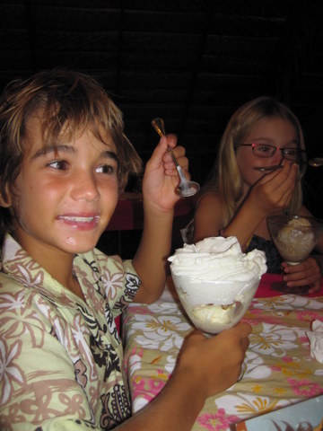
Sidney aime la crème glacée.
Au lieu d'aller à la poste leur expliquer ma façon de penser, j'ai opté pour un plan moins audacieux mais plus agréable (et, à terme, probablement plus efficace): goinfrer les enfants et me saoûler. Nous écumons les restaurants de Rangiroa et, pendant que je vide consciencieusement les flacons les plus divers, les enfants et Cécile s'empiffrent. Objectivement, il vaut mieux ça que l'inverse.
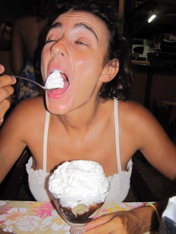
Cécile au moins autant, si ce n'est plus.
Pendant la journée, comme nous avons épuisé notre capital plongée, nous jouissons d'un répit forcé. Nous errons sur le bateau, indolents, à l'image des atolliens. Nous regardons les bateaux aller et venir autour de nous en répétant qui notre table de 4, qui les paroles de Grease, qui le subjonctif présent du verbe venir.
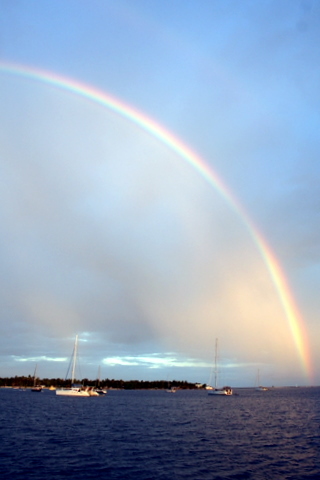
A force de regarder l'horizon, on a fini par trouver la fameuse île au trésor (à droite).
Disposant d'un capital temps important, j'ai même pu, grâce au sextant et à la table des marées, calculer avec précision l'heure de notre départ: nous lèverons l'ancre mardi prochain, à 7h53, heure locale, afin de franchir la passe à l'étale de basse mer et de se présenter à une heure raisonnable devant celle de Tikehau (notre prochain et dernier atoll des Tuamotu).
4 Mai 2010 - Projet pédagogique.
L'odyssée du LET IT BE, pour périlleuse qu'elle soit, ne s'inscrit pas moins dans le cadre d'un projet pédagogique aux multiples facettes.
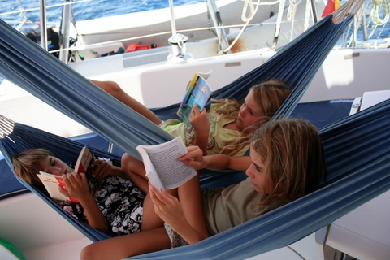
L'instruction des enfants reste une priorité à bord.
Bien sûr, nous sommes attentifs à assurer, quand les PTT nous y autorisent, l'instruction de nos enfants. Grâce à l'EAD, nous disposons de matériel et d'un programme efficace (quand, au risque de me répéter, la poste satisfait à ses obligations contractuelles).
Cependant, le projet ne s'arrête pas là. En effet, nous servons aussi de matière première pour le travail d'importance considérable que réalise Laetitia, en Belgique. Laetitia a 11 ans, est en 6ème primaire et a décidé de réaliser son projet cap'ten de fin d'école primaire sur base de notre périple. Elle a accumulé beaucoup d'informations et effectué de nombreux travaux en relation avec les pays que nous traversons. Nous lui souhaitons évidemment un succès retentissant et une éternelle reconnaissance des autorités académiques.
2 Mai 2010 - Rangiroa, les PTT ne répondent plus.
Depuis que Benoit est parti, nous sommes à nouveau seuls au monde. Enfin presque puisqu'il y a quand même 15 bateaux qui sont arrivés au mouillage à nos côtés en une semaine. La transhumance des bateaux nord-américains a commencé et, comme ils ne reçoivent que 3 mois de visa pour visiter la Polynésie, ils défilent à bonne allure.
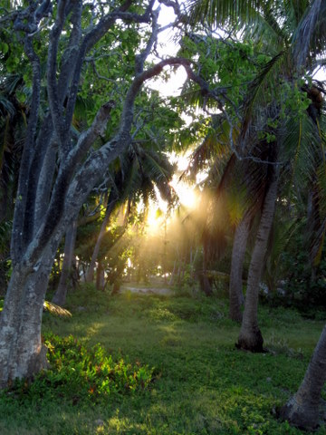
La présence de Dieu dans les branches est indubitable.
Heureusement, il y a aussi Blue Callaloo, le cata de Markus et Tina, que nous avons fréquenté aux Marquises. Grâce à eux, on peut passer des moments paisibles, tranquillement occupés à boire une bière sur le pont en regardant les américains s'exciter.
Hélas, tout n'est pas rose aux Tuamotu. La Poste locale a une fois de plus égaré notre colis et, cette fois-ci, ils n'arrivent même pas à le localiser. On est donc coincé ici, en attendant que ces gens foutre, passez-moi l'expression, retrouvent notre précieux envoi.
26 Avril 2010 - Au revoir.
C'est déjà fini ! 2 semaines se sont écoulées depuis l'arrivée des cousines. Apparemment, nous avons dû subir une discontinuité spatio-temporelle, seule explication possible à l'allure hallucinante à laquelle se sont déroulées ces vacances.
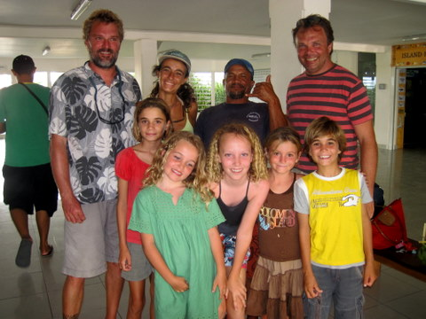
Dernière photo de famille à l'aéroport (remarquez que Ben a troqué Polly pour un local basané).
Hélas, il nous faut déjà nous dire au revoir. C'est avec beaucoup d'émotions (et pas mal de larmes aussi) que nous avons salué une dernière fois la famille, avant de les regarder décoller vers Papeete, première étape de leur (long) voyage de retour vers la civilisation, les embouteillages et le stress.
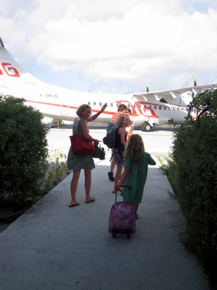
En route pour l'avion.
Quant à nous, nous sommes rentrés sur LET IT BE, un peu triste sans personne à bord. Le bateau semble vide et il nous faut maintenant retrouver nos habitudes... Un peu triste quand même ces adieux :-( ...
24 Avril 2010 - Le lagon bleu de Rangiroa.
A l'extrême ouest de Rangiroa, la barrière de corail s'incurve sur elle-même jusqu'à former un petit lagon de faible profondeur dans le grand lagon. Faisant preuve de grande originalité, les autochtones l'ont baptisé: le lagon bleu, ou blue lagoon pour les amateurs de whiskey.
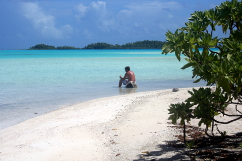
Benoit médite dans le lagon.
Nous aurions pu y mouiller en catamaran mais, en ce 24 avril, nous avons décidé de louer un spitbot (une vedette) afin de gagner du temps (et d'éviter un éventuel échouage sur le corail).
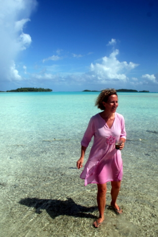
Polly ne peut pas croire que l'eau soit si claire.
Grâce à la vedette de Pohillo, nous nous sommes retrouvés en un peu plus d'une heure sur un motu bordant le lagon. Par un concours de circonstances qui n'arrive que dans les films, le motu en question appartient justement à la famille de Pohillo et est équipé de tout ce qu'il faut pour camper sommairement: tables, bancs, petite cahute, BBQ et, comble du luxe, mini-transats en fibre de verre.
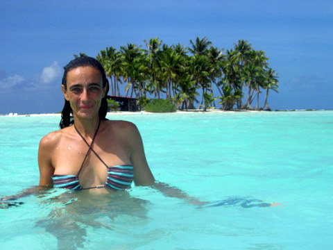
Cécile devant notre motu du jour.
Arrivés aux confins du secteur, nous avons mouillé dans 50 cm d'eau avant de rejoindre notre lieu de villégiature du jour. D'emblée, nous avons été conquis par le calme et la beauté des lieux, dont nous pouvions profiter sans concurrence aucune.
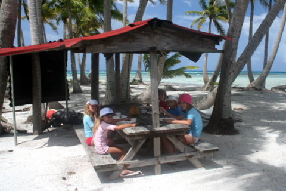
Les enfants mangent.
En plus, ce lieu est l'endroit de reproduction privilégié des requins à pointe noire. C'est donc dans un vivier à requins que nous avons nagé et joué toute la journée. Nous avons mangé une bonne darne de mahi mahi cuite sur le feu et profité de l'arrière-saison pour ne rien faire au bord du lagon, si ce n'est regarder les ailerons des requins qui tournoyaient à nos pieds.
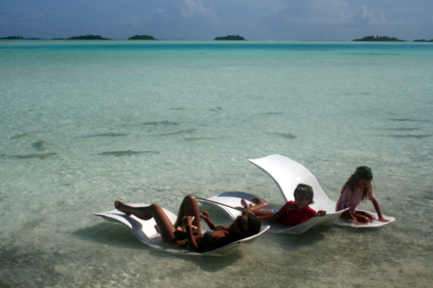
Farniente (remarquez les requins aux pieds de Cécile).
23 Avril 2010 - Snorkeling à Rangiroa.
Rangiroa est le plus grand atoll des Tuamotu et également le plus peuplé avec près de 1800 habitants. Malgré cela, on n'y trouve que difficilement des fruits et légumes. Par contre, il y a une pizzeria, ce qui constitue en soi une excellente raison de rester quelques jours. Il y a deux passes praticables par les voiliers: Tiputa à l'est et Avatoru à l'ouest.
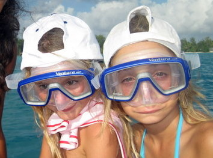
Kenya et Syr Daria, équipées pour le snorkeling.
A l'entrée de la passe de Tiputa, il se trouve un petit motu sableux qui abrite une faune sous-marine luxuriante, raison pour laquelle on appelle ce lieu l'aquarium.
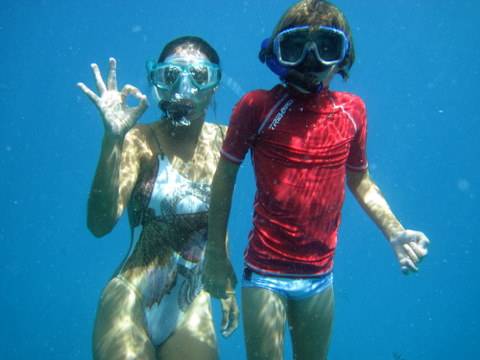
Cécile et Sidney, en plein effort.
A 9 dans le dinghy, nous avons pris le chemin du motu pour dire bonjour aux poissons.
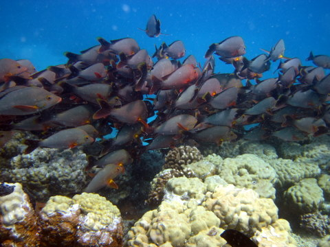
Poissons dans l'aquarium.
Sur LET IT BE, on aime les pizzas, l'eau claire et les plages de sable fin. On va donc rester quelques jours à Rangiroa (sans compter le fait qu'un colis devrait nous y parvenir dans quelques jours et que, si tel n'était pas le cas, on devrait attendre jusqu'à son arrivée).
20 Avril 2010 - En route pour Rangiroa.
Pendant la traversée vers l'atoll de Toau - notre seule escale en route vers Rangiroa - nous étions au portant, ce qui incita Benoit à tenter un ciseau: grand voile à bâbord, génois à tribord. Cet exercice est un peu périlleux car il suffit d'une petite vague pour rompre l'équilibre et risquer la dévente de l'une des deux voiles. Néanmoins, c'est en cette allure que nous avons pêché simultanémént deux énormes mahi mahi (dorades coryphènes) que nous avons eu bien du mal à ramener à bord, Benoit tirant à bâbord et moi souquant à tribord. L'une d'elles nous a d'ailleurs faussé compagnie en se tortillant sur la jupe.
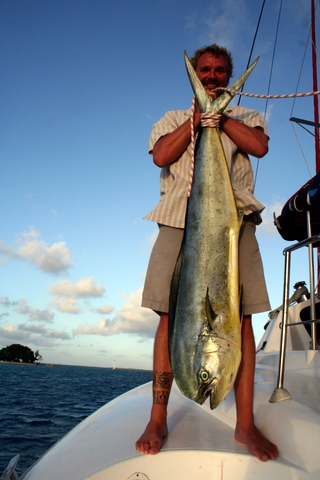
Mahi mahi.
Vers 16 heures, nous nous sommes présentés devant la passe Tehere, qui permet l'accès à l'anse Amnyot, où nous avions décidé de faire halte. Nous y avons salué Gaston et Valentine, qui, moyennant finances, acceptèrent de nous offrir à manger dans leur restaurant sur piloti.
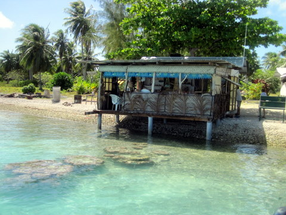
Le restaurant de Gaston et Valentine, au bord de l'eau.
Dans cet endroit lugubre, nous avons été obligés de manger des poissons en provenance du lagon, que Gaston piège dans un vaste enclos sous-marin. Nous avons été chercher nos poissons avec lui durant la matinée et, je dois admettre que le spectacle en valait la peine: sous les yeux ahuris des enfants, Gaston s'est livré à une pêche à la lance d'une précision chirurgicale, extrayant une quinzaine de poissons de la nasse, avant de libérer un requineau qui s'y était malencontreusement aventuré.
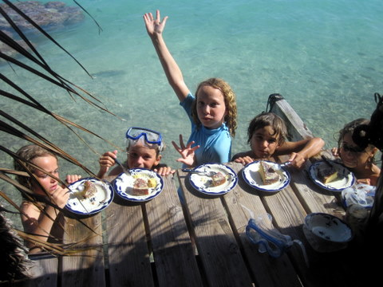
Les enfants mangent leur gateau les pieds dans l'eau.
18 Avril 2010 - BBQ à Fakarava.
C'est bien beau de pêcher des thons et de ramasser des langoustes sur le platier, encore faut-il les manger. Pour cela, rien de tel qu'un endroit paradisiaque, genre sable rose et eau claire.
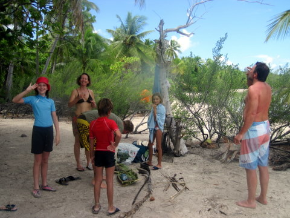
Le lieu choisi pour le BBQ.
Par un incroyable concours de circonstances, nous avions justement une belle plage à notre disposition à une encablure de notre mouillage au sud de Fakarava. Nous nous y sommes donc rendus, munis de notre grille, et, après avoir ramassé du bois mort, nous avons allumé le feu, pour faire danser les diables et les dieux. (Merci Johnny pour ce grand moment de poésie).
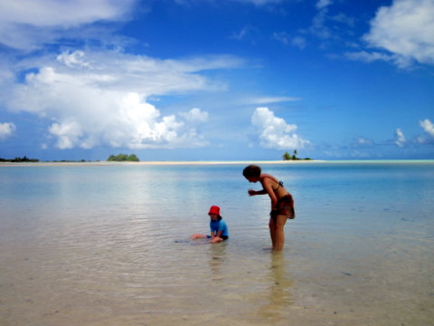
Polly et Stéphanie ne font rien.
Nous avons fait griller les langoustes, un peu de thon et le poisson perroquet. Ensuite nous nous sommes remplis la panse, de manière un peu outrancière, il faut l'avouer.
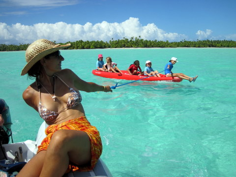
Cécile tient le kayak.
Malheureusement, nous n'avons pas pu nous éterniser car le programme de Benoit est très chargé et nous devions impérativement regagner la passe Nord à la tombée de la nuit, afin de préparer notre traversée vers Rangiroa.
17 Avril 2010 - Retour à Fakarava.
Au retour de Faaite, il faisait toujours très calme et nous sillonnions la mer d'huile au bruit des moteurs, l'oeil attentif aux concentrations d'oiseaux, signe indubitable de la présence d'une faune sous-marine impatiente de se faire pêcher.
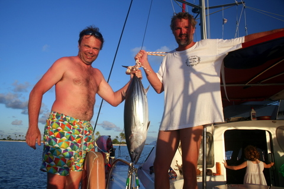
Ben et Eric posent devant la prise du jour.
C'est ainsi que nous avons repéré les volatiles, éxécuté un S au moteur afin de traverser le banc de bonites supposé et, au final, réussi à en attraper une, au grand plaisir des enfants, et, surtout des papas.
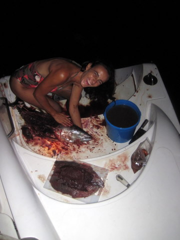
Cécile dépèce la bonite...
Arrivés à Fakarava Sud, Cécile s'est une fois de plus acharnée sur le poisson. Si un jour je disparais, vérifiez si je ne suis pas découpé en morceaux dans le congélateur...
16 Avril 2010 - Faaite, pétole.
Au sud de Fakarava, il y a un petit atoll du nom de Faaite. Toujours en quête de sensations fortes, nous n'avons pas hésité à entreprendre la traversée de plus de 10 miles entre les deux atolls. En ce jour d'avril, il faisait trèèèèèès calme et le mouillage fut très reposant.
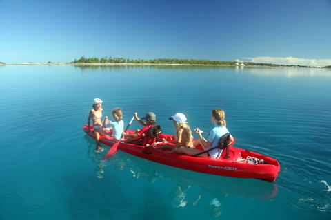
Les enfants partent en exploration.
Nous avons passé deux jours et une nuit à Faaite, profitant du calme absolu du lagon pour aller pêcher la langouste sur le platier, dès la nuit tombée. Pour une fois, nous avons réussi à en attraper quelques unes, que nous ferons cuire au BBQ un de ces jours.
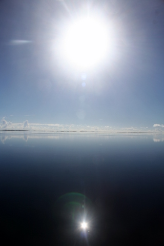
Le soleil se reflète dans l'huile du lagon. Belle photo.
Au coucher du soleil, le vent était toujours nul et les enfants sont revenus de leur aventure à la rame.
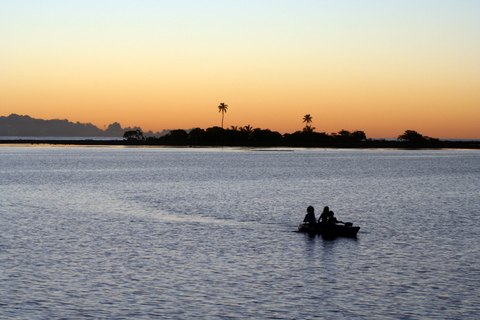
Les enfants reviennent entre chiens et loups.
Encore une étape difficile dans notre périlleux voyage aux Tuamotus.
15 Avril 2010 - Fakarava, passe Sud.
Au sud de Fakarava, les paysages sont de plus en plus maussades. Toujours les éternels cocotiers, le sable blanc qu'on dirait lavé avec DASH, la mer turquoise, vraiment, c'est monotone.
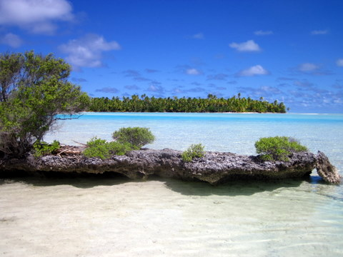
J'insiste pas de trop.
On nous avait prévenus: la passe Sud est à la plongée bouteille ce que la moutarde est à la choucroute: un truc dont on se passe volontiers mais quand y en a, c'est mieux.
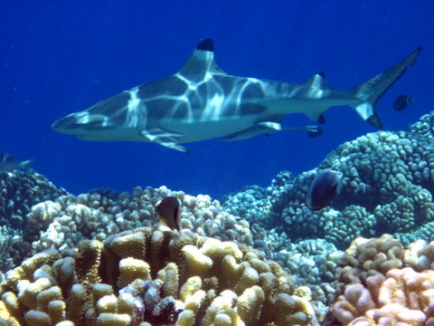
La passe sud est gardée par une horde de requins sanguinaires.
On a profité de l'occasion qui se présentait pour enfiler nos scaphandres et nous immerger par près de 30m de fond. A cette profondeur abyssale, où la lumière se fait rare et où la température ne dépasse guère 25°C, règnent des créatures étranges et carnivores, dont le nom seul évoque la peur: les requins. Je n'aime pas me vanter mais vraiment, en ce jour d'avril, nous avons pu admirer au moins 200 requins gris, qui n'eurent de cesse de nous agresser, tentant par tous les moyens de nous dévorer. Heureusement, nous avions tous revêtus du néoprène, une matière extra-terrestre que les requins ne peuvent ingérer, sous peine de se transformer en têtard.
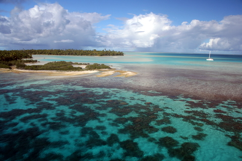
Mouillage sordide au sud de Fakarava.
Après cette plongée phénoménale, nous sommes repartis pour un snorkeling: dépose en dinghy à l'entrée de la passe puis, profitant de la marée montante, nous nous sommes laissés entraîner tranquillement dans le lagon, en serpentant parmi les murènes, les requins, les napoléons et même quelques harengs. Inoubliable !
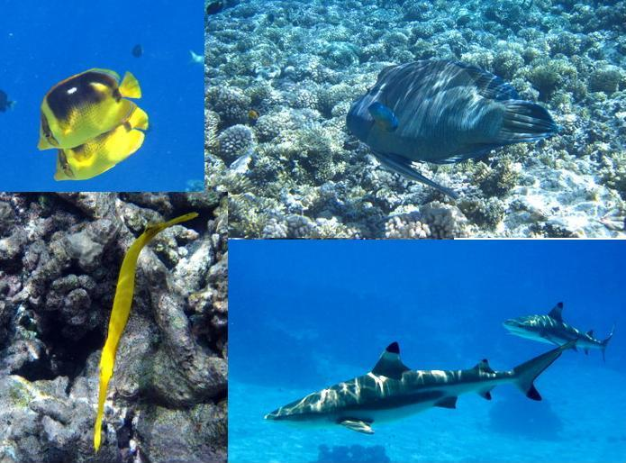
Quelques poissons du récif.
Enfin, vers 17h, il a fallu sortir de l'eau et retourner sur le bateau en tentant d'oublier cette journée hors du commun qui malheureusement ne se répétera pas avant demain, ou après-demain, si la météo est contraire.
13 Avril 2010 - Fakarava, on ne perd pas de temps.
A peine arrivés, le programme des visiteurs stipulait: "plongée". Dès 8 heures, Benoit nous accompagnait sur le tombant, à la sortie de la passe Nord, pour une plongée bouteille mémorable, survolant la barrière de corail.
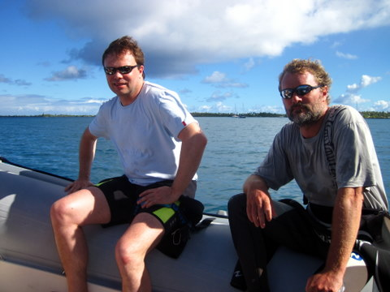
Ben, Eric et Cécile vont plonger.
Pour Polly, le programme était sensiblement le même mais, comme il s'agissait d'une première, la plongée se faisait dans le lagon, accompagnée par un moniteur.
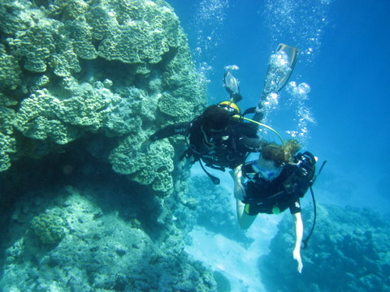
Stéphanie aussi a goûté aux joies des bulles sous-marines.
Et puisque l'eau était chaude, les coraux multicolores et le soleil plein d'entrain, Stéphanie s'est aussi laissée tenter par un petit ploutch, tout-à-fait rafraichissant par ces températures caniculaires.
12 Avril 2010 - Fakarava, arrivée de Benoit, Polly, Stéphanie et Lucie.
Après plus de 5 longues minutes de dinghy, nous sommes arrivés à l'aéroport de Fakarava afin d'y accueillir les cousins, qui trainaient misérablement depuis plus de 24 heures dans des aéronefs de tous types.
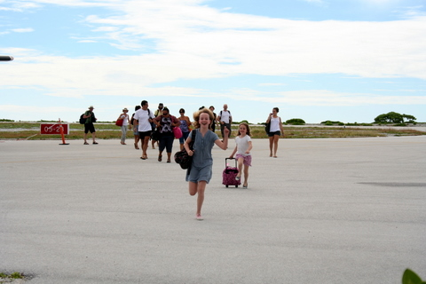
Stéphanie et Lucie, impatiente de retrouver leurs cousines.
Dès leur arrivée, nous avons offert à Benoit et Polly un collier de fleurs, comme le veut la tradition. Normalement, Cécile devait danser les seins nus mais ça aurait fait un peu désordre dans l'aéroport, alors on s'est contenté de se faire la bise.
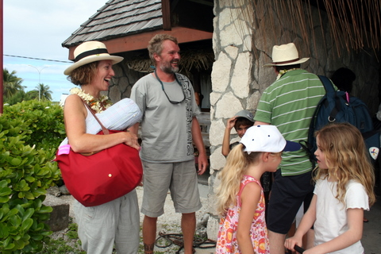
Tous le monde se retrouve avec beaucoup d'émotion.
Dès le retour sur LET IT BE, on a pu entamer les choses sérieuses, à savoir l'ouverture des valises et la découverte des cadeaux. Dans ces moments, je suis toujours un peu anxieux à l'idée que l'on ne se soit pas bien compris et que je trouve de l'eau minérale au lieu du vin tant attendu. A mon grand soulagement, ce sont bien des outres de vin, du chocolat, du saucisson et des bonbons que Benoit et Polly ont trimballé sur près de 20.000 km. Seuls ceux qui ont dû boire l'infâme breuvage rougeâtre qu'ils osent appeler vin par ici, peuvent comprendre la joie indicible qui me submergea à ce moment. Moi qui pensais sérieusement à abandonner ma carrière d'alcoolique, je vais pouvoir m'y remettre sérieusement.
Je ne peux non plus m'empêcher de remercier tous ceux qui nous ont envoyé des champignons séchés. Nous avons maintenant des agarics, des cèpes et même des morilles que nous allons utiliser pour agrémenter nos pâtes et, oserais-je le dire, nos trop rares entrecôtes.
11 Avril 2010 - Fakarava, blub blub blub.
Un lagon, une bande de sable, quelques cocotiers, des poissons et un soleil de plomb. Que faire ? Une chasse à l'ours ? Un tricot ? Une partie de curling ? Une plongée bouteille. Mais oui ! Voilà, on va faire un petit tour sous l'eau.
Première étape: trouver du matériel. Piece of cake, puisqu'il suffit de se rendre cher Te Ava Nui, centre de plongée.
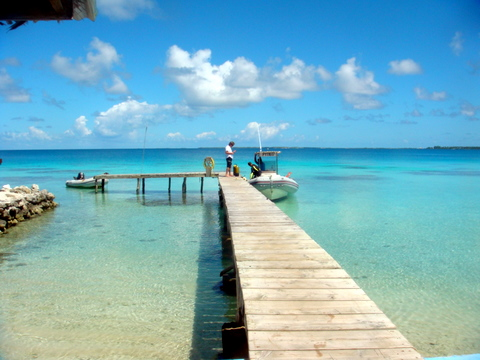
Te Ava Nui.
Deuxième étape, enfiler palmes, masque, combi, gilet et bouteille.
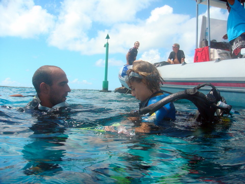
Kenya avec Cyril, le moniteur.
Troisième étape, sauter tête la première dans les eaux claires du lagon, en prenant bien soin d'être accompagné par un moniteur chevronné.
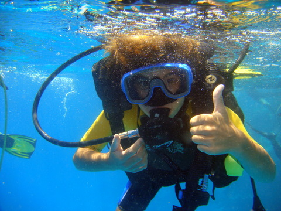
Pour Sidney, tout est OK.
Quatrième étape, profiter des fonds marins (en essayant de rester en équilibre malgré le poids de la bouteille).
Très à l'aise Syr Daria, avec cette énorme bouteille sur le dos.
Cinquième étape, signer son certificat de baptême de plongée. Les enfants on été enchantés de ce premier plongeon sous-marin (et je ne suis pas sûr qu'ils mesurent pleinement leur chance, mais ça, c'est une autre histoire).
7 Avril 2010 - Fakarava, morne plaine.
La traversée vers Fakarava s'est déroulée sans souci, de la plus agréable des manières: sous spi, bercés par une longue houle, à 6 noeuds de moyenne.
Les Tuamotu sont constitués d'atolls, dont j'ai expliqué la formation lors de l'une des questions (Voir onglet Questions). Toutefois, je n'ai pas mentionné que la barrière de corail comportait généralement des 'trous', appelés 'passes' par lesquelles on peut pénétrer dans l'atoll. En effet, on ne mouille pas en pleine mer mais au sein même de l'atoll, protégés de la houle par la barrière de corail. Certains atolls n'ont aucune passe (et l'on ne s'y rend donc généralement pas en voilier), d'autres ont une passe, d'autres enfin en ont deux, comme Fakarava.
Les passes permettent d'entrer et de sortir de l'atoll, tant pour les embarcations que pour l'eau. Au rythme des marées, le lagon se remplit et se vide, provoquant des courants importants au niveau des passes. C'est la raison pour laquelle il convient d'être extrêmement prudent lorsqu'on pénètre dans l'atoll: le courant peut être si puissant que le bateau devient non manoeuvrable.
Remous dans l'eau à l'entrée de la passe.
Mais nous étions sur nos gardes. Nous sommes donc arrivés sans encombre. Fakarava, c'est un peu comme Waterloo: une morne plaine, faites de sable et d'eau turquoise, sans relief aucun.
A peine arrivés, nous avons constaté que notre cale moteur tribord était remplie d'eau. Après une analyse approfondie, nous avons pu identifier l'origine de ce malheur: la pompe d'eau de mer (pour le refroidissement du moteur) était fuyante. N'écoutant que mon courage (et un restant de lucidité), je fis appel à un bateau voisin pour venir confirmer mon diagnostic. Bien m'en prit puisque le médecin/mécano du bateau d'à côté, non seulement me confirma, mais se crût autorisé à réparer lui-même la panne (en fait, il s'agissait tout simplement de quelques vis dont la tête avait sauté et qu'il suffisait de remplacer, ce qui, sur un bateau, signifie une heure de contorsions en fond de cale). Bref, Jean-Marie, notre voisin, a perdu 2 heures dans nos cales pour nous permettre d'utiliser à nouveau notre moteur tribord.
Le petit restaurant, avec son 'ponton' pour amarrer le dinghy.
Pour le remercier, nous lui avons offert un repas au bord de l'eau, dans un de ces immondes kiekenkot qui pullulent sur les rivages de Fakarava.
La table au bord du lagon et le serveur au goût de tiaré...
Nous avons déjeuné en bord de plage, en regardant les raies et autres requins qui frayaient à nos pieds, avant de plonger dans l'eau claire pour nous rafraîchir. En fin de journée, j'avais un peu mal à la tête. Sans doute était-ce la surabondance de soleil... ou la chaleur trop intense... Qui sait ?
6 Avril 2010 - Kauehi, on part à Fakarava.
De Kauehi à Fakarava (l'un des plus grands atolls des Tuamotu), il y a 40 nm, si l'on tient compte des détours par les passes pour entrer et sortir des atolls.
Nous avons levé l'ancre à 7h du matin, pour être sûrs de nous présenter devant la passe Nord de Fakarava en début d'après-midi, afin de profiter de la marée descendante et de l'aplomb du soleil, fort utile pour distinguer les patates de corail dans les lagons.
L'île où Kenya voudrait vivre.
En quittant Kauehi, bous avons croisé un motu, où sont installés les perliculteurs.
Un poisson de lagon, que l'on n'a pas pu identifier mais qui nous donnera 3 kg de tendres filets.
Un peu plus loin, toujours dans le lagon, nous avons croisé un poisson dont j'ignore le nom, mais qui a fini en filets dans un tupperware, au fond du frigo. Vraiment, cette ligne tribord mérite toutes les éloges...et Cécile aussi pour sa capacité à lever les filets en toutes circonstances, en des temps de plus en plus courts.
4 Avril 2010 - Kauehi, vacancelle pascale.
Il y a des choses avec lesquelles on ne plaisante pas en Polynésie. Ainsi en va-t-il de la résurrection du ket de Bethléem, événement certes improbable mais a priori assez distant des préoccupations présentes des insulaires.
L'église du village.
Le maire du village, personnage au deumeurant fort sympathique, poursuivait sa campagne électorale en ne perdant pas une occasion de soigner ses ouailles. Il avait tout prévu: messe le matin pour permettre aux grands de chanter la gloire de Jésus, suivi d'une chasse au trésor avec distribution d'oeufs en chocolat pour les petits.
Les enfants cherchent le trésor au pied des cocotiers.
Les enfants ont donc entraîné Cécile dans une chasse au trésor aux confins du secteur (labatafé en polynésien), c'est-à-dire loin du village. Après une heure de promenade dans les cocotiers, tous le monde est revenu au centre du village pour partager un repas frugal, fait de gateaux, cakes et autres sandwiches.
Sidney se demande que faire...manger le gateau ou manger le cake ?
Après cet intermède ludique épuisant, il nous fallait cependant retourner sur LET IT BE afin de glander tranquillement. Et comme nous étions sur le point d'être rincés par un bon grain tropical, voilà la photo, sans trucage, que Cécile a prise du dinghy qui nous ramenait à bord.
LET IT BE dans une lumière boréale.
A propos, vacancelle est le terme québecquois pour 'week end'...
3 Avril 2010 - Kauehi, Kenya a 11 ans
Tout cela ne nous rajeunit pas mais force est de l'admettre, c'est aujourd'hui le 11ème anniversaire de Kenya. Pour célébrer cet événement, Cécile a revêtu la toque de pâtissier et nous a concocté un cake au chocolat de derrière les cocotiers.
Le cake décoré par les enfants.
Vers 16 heures, heure de Kauehi, nous nous sommes réunis autour de la table du carré et nous avons entonné La Marseillaise, par solidarité avec notre premier ministre. Remarquant notre méprise, nous avons enchaîné sans attendre par un tonitruant 'Bon anniversaire, Kenya'. Ensuite, nous l'avons innondée de cadeaux plus magnifiques les uns que les autres.
Kenya souffle ses 11 bougies.
11 ans déjà...Diable que le temps passe vite quand on s'amuse.
1 Avril 2010 - Kauehi, 1 an de voyage
Ca fait un an qu'on est parti ! Et pour aller où ? Ici, aux Tuamotu, en un lieu plein d'ennui, où il n'y a rien à faire. C'est trop génial, comme disent les enfants. Je vous laisse juges.
Kauehi, bord de plage.
Et oui, ça fait mal, hein ? Allez, je vous en tape encore une petite, pour la route, comme ça vous n'aurez pas surfé pour rien.
Ferme perlière dans le lagon.
Je me demande ce qu'on va faire ici, à part rien.
27/31 Mars 2010 - Traversée vers les Tuamotu
Nous avons quitté les Marquises ce samedi 27 mars, non sans avoir rempli les cales du bateau de denrées les plus exotiques, dont les atolls sont notablement dépourvus: farine, spaghetti, sucre, sirops, etc.
Salon de lecture en traversée.
J'avais préparé la traversée avec le plus grand soin, évitant de partir un vendredi, analysant les champs de vent, vérifiant l'état de la lune, inspectant voiles et moteurs, et tutti quanti. Tout était parfait et, vers 14 heures, nous quittions la baie de Taiohae, saluant nos amis au mouillage d'un geste qui se voulait à la fois théatral et solennel. Pourquoi partir à 14h ? Eh bien, cette heure H est le fruit de calculs fort compliqués mais que je peux résumer ainsi: il y a 510 nautiques de Nuku Hiva à Kauehi. Nous voguons en général à une moyenne légèrement inférieure à 6 noeuds. Conclusion: il nous faut environ 3j et demi et une chique pour couvrir la distance. Et comme je voulais arriver le matin...
Croyez-le si vous le voulez mais l'expérience n'a pas confirmé la théorie. Curieusement, les prévisions de vent se sont avérées peu fiables. Tout se passa plus ou moins bien pendant 48 heures, puis, au milieu de la traversée, ce fut l'embardée. Au lieu d'avoir 15 noeuds de ENE, nous avions péniblement 5 noeuds ESE, en soufflant nous-mêmes dans les voiles. Cette maigre différence aurait pu être suffisante pour empêcher Let It Be de respecter mes prévisions sans un instrument providentiel. En effet, comment voulez-vous faire avancer un bateau de 12T à 6 noeuds avec 5 noeuds de vent ? Au moteur, évidemment. Donc, une fois de plus, nous sommes au moteur depuis 24 heures et, selon toute probabilité, nous ne sortirons plus les voiles jusqu'à destination.
6 heures du mat, le soleil se lève.
En tous cas, je tiens à remercier Otto Diesel. Curieux d'ailleurs que l'inventeur du moteur à explosion s'appelait justement Otto. Quoi qu'il en soit, je me demande comment ils faisaient quand ils n'avaient pas de moteurs sur leurs navires... Et tant qu'on y est, je félicite Carole pour son entrée dans le club très fermé des quadras.